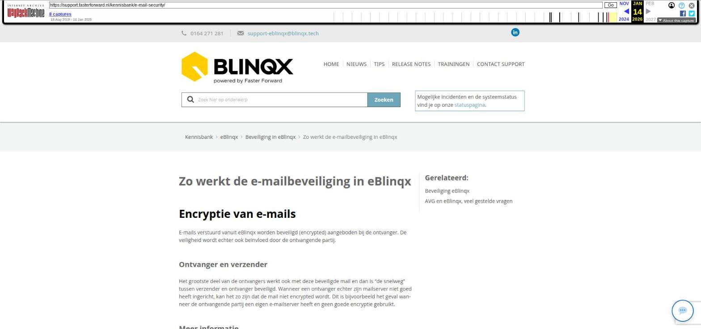

Zo werkt de e-mailbeveiliging in eBlinqx

Tekstinhoud
Zo werkt de e-mailbeveiliging in eBlinqx
Encryptie van e-mails
E-mails verstuurd vanuit eBlinqx worden beveiligd (encrypted) aangeboden bij de ontvanger. De veiligheid wordt echter ook beïnvloed door de ontvangende partij.
Ontvanger en verzender
Het grootste deel van de ontvangers werkt ook met deze beveiligde mail en dan is "de snelweg" tussen verzender en ontvanger beveiligd. Wanneer een ontvanger echter zijn mailserver niet goed heeft ingericht, kan het zo zijn dat de mail niet encrypted wordt. Dit is bijvoorbeeld het geval wanneer de ontvangende partij een eigen e-mailserver heeft en geen goede encryptie gebruikt.
Meer informatie
Google heeft op haar website meer uitleg gegeven over het versturen en ontvangen van e-mail berichten. Klik hier voor meer informatie over encrypted berichten.
HTML purifier
Om te voorkomen dat er geen malafide code of verborgen scripts in e-mails zitten, gebruikt eBlinqx een HTML purifier. Doordat sommige stijlvormen een bedreiging vormen, worden deze niet geaccepteerd in de e-mailclient van eBlinqx, waardoor de e-mail in eBlinqx er anders uit kan zien dan in bijvoorbeeld G-mail of Outlook.
Deze purifier was soms te streng, waardoor bepaalde zaken uit de mail gefilterd werden. Deze controle is nu beter gespecificeerd. Hierdoor zijn de uitnodiging en bijbehorende link wel zichtbaar zijn in de e-mail.
Voorbeeld
Een e-mail komt binnen met een Teams webmeeting link (uitnodiging). Deze link, achter de knop 'Open Microsoft Teams', werd door de purifier weggefilterd, waardoor je in eBlinqx niet kon klikken op de link. Door de aanpassing werkt deze link nu wel.
Laatste update: 4 juni 2024
Tagged: mail
Was deze informatie nuttig?
Ja Nee